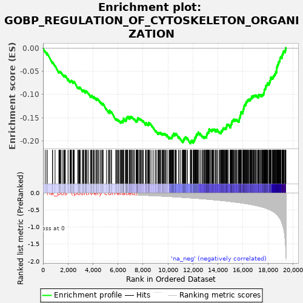
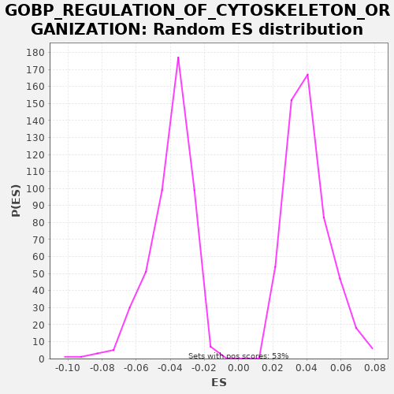

| | | Dataset | A_X_tradeoff |
| Phenotype | NoPhenotypeAvailable |
| Upregulated in class | na_neg |
| GeneSet | GOBP_REGULATION_OF_CYTOSKELETON_ORGANIZATION |
| Enrichment Score (ES) | -0.20631826 |
| Normalized Enrichment Score (NES) | -5.1780386 |
| Nominal p-value | 0.0 |
| FDR q-value | 0.0 |
| FWER p-Value | 0.0 |
Table: GSEA Results Summary

Fig 1: Enrichment plot: GOBP_REGULATION_OF_CYTOSKELETON_ORGANIZATION
Profile of the Running ES Score & Positions of GeneSet Members on the Rank Ordered List
| SYMBOL | RANK IN GENE LIST | RANK METRIC SCORE | RUNNING ES | CORE ENRICHMENT | | 1 | CAV3 | 175 | -0.001 | -0.0071 | No |
| 2 | GPM6B | 315 | -0.002 | -0.0123 | No |
| 3 | SORBS3 | 330 | -0.002 | -0.0109 | No |
| 4 | FZD10 | 756 | -0.004 | -0.0311 | No |
| 5 | P2RX7 | 769 | -0.004 | -0.0296 | No |
| 6 | CHMP4C | 965 | -0.005 | -0.0377 | No |
| 7 | BCAS3 | 1269 | -0.007 | -0.0515 | No |
| 8 | MYLK3 | 1291 | -0.007 | -0.0505 | No |
| 9 | TRPM2 | 1330 | -0.007 | -0.0504 | No |
| 10 | RND1 | 1385 | -0.007 | -0.0511 | No |
| 11 | CX3CL1 | 1449 | -0.008 | -0.0522 | No |
| 12 | TMEM67 | 1586 | -0.009 | -0.0573 | No |
| 13 | PFN4 | 1672 | -0.009 | -0.0596 | No |
| 14 | SH3BP1 | 1714 | -0.009 | -0.0596 | No |
| 15 | SPTBN5 | 1773 | -0.010 | -0.0605 | No |
| 16 | BAIAP2 | 1781 | -0.010 | -0.0588 | No |
| 17 | RHOF | 2005 | -0.011 | -0.0684 | No |
| 18 | MAPK15 | 2010 | -0.011 | -0.0664 | No |
| 19 | PHPT1 | 2159 | -0.012 | -0.0721 | No |
| 20 | MYOC | 2189 | -0.012 | -0.0715 | No |
| 21 | ALOX15 | 2216 | -0.012 | -0.0707 | No |
| 22 | PTGER4 | 2246 | -0.013 | -0.0701 | No |
| 23 | NTRK3 | 2284 | -0.013 | -0.0699 | No |
| 24 | ARHGAP28 | 2403 | -0.013 | -0.0740 | No |
| 25 | KATNB1 | 2414 | -0.014 | -0.0723 | No |
| 26 | ASAP3 | 2451 | -0.014 | -0.0721 | No |
| 27 | TACSTD2 | 2504 | -0.014 | -0.0727 | No |
| 28 | ARHGAP6 | 2777 | -0.016 | -0.0849 | No |
| 29 | LMOD2 | 2823 | -0.016 | -0.0851 | No |
| 30 | MAP6D1 | 2884 | -0.016 | -0.0861 | No |
| 31 | PFN1 | 2890 | -0.017 | -0.0843 | No |
| 32 | GRHL3 | 2935 | -0.017 | -0.0844 | No |
| 33 | PHLDB1 | 3001 | -0.017 | -0.0857 | No |
| 34 | BAIAP2L2 | 3160 | -0.018 | -0.0919 | No |
| 35 | SYNPO | 3180 | -0.018 | -0.0908 | No |
| 36 | CDK10 | 3238 | -0.019 | -0.0916 | No |
| 37 | INPP5K | 3266 | -0.019 | -0.0909 | No |
| 38 | NUP62 | 3385 | -0.020 | -0.0950 | No |
| 39 | ESAM | 3399 | -0.020 | -0.0935 | No |
| 40 | CDH5 | 3403 | -0.020 | -0.0915 | No |
| 41 | NTF3 | 3483 | -0.021 | -0.0935 | No |
| 42 | CDC42 | 3535 | -0.021 | -0.0941 | No |
| 43 | ARHGAP40 | 3652 | -0.022 | -0.0981 | No |
| 44 | IQANK1 | 3812 | -0.023 | -0.1043 | No |
| 45 | NAA80 | 3850 | -0.023 | -0.1041 | No |
| 46 | SERPINF2 | 3873 | -0.023 | -0.1031 | No |
| 47 | EDN1 | 3894 | -0.024 | -0.1020 | No |
| 48 | ARHGEF10L | 3990 | -0.024 | -0.1049 | No |
| 49 | ADD3 | 4055 | -0.025 | -0.1061 | No |
| 50 | BICD2 | 4065 | -0.025 | -0.1045 | No |
| 51 | WDR1 | 4162 | -0.026 | -0.1074 | No |
| 52 | GMFG | 4269 | -0.027 | -0.1108 | No |
| 53 | MYADM | 4298 | -0.027 | -0.1101 | No |
| 54 | PLEKHG2 | 4301 | -0.027 | -0.1081 | No |
| 55 | NOTCH2 | 4377 | -0.028 | -0.1099 | No |
| 56 | RND3 | 4451 | -0.028 | -0.1116 | No |
| 57 | CDC42EP2 | 4568 | -0.030 | -0.1156 | No |
| 58 | SYDE1 | 4657 | -0.030 | -0.1181 | No |
| 59 | HSPA1B | 4751 | -0.031 | -0.1208 | No |
| 60 | PAK3 | 4754 | -0.031 | -0.1188 | No |
| 61 | CHMP4B | 4816 | -0.032 | -0.1199 | No |
| 62 | TMOD4 | 5076 | -0.034 | -0.1314 | No |
| 63 | FAM107A | 5223 | -0.036 | -0.1369 | No |
| 64 | HSPA1A | 5302 | -0.037 | -0.1389 | No |
| 65 | SKA1 | 5307 | -0.037 | -0.1370 | No |
| 66 | NAV3 | 5314 | -0.037 | -0.1351 | No |
| 67 | LRP1 | 5335 | -0.037 | -0.1341 | No |
| 68 | RASSF7 | 5441 | -0.038 | -0.1374 | No |
| 69 | DLC1 | 5490 | -0.039 | -0.1378 | No |
| 70 | APOA1 | 5821 | -0.043 | -0.1531 | No |
| 71 | RAC1 | 5866 | -0.043 | -0.1532 | No |
| 72 | SWAP70 | 5916 | -0.044 | -0.1537 | No |
| 73 | TEK | 5981 | -0.045 | -0.1549 | No |
| 74 | SMAD3 | 6026 | -0.045 | -0.1551 | No |
| 75 | VASP | 6099 | -0.046 | -0.1567 | No |
| 76 | RHOD | 6199 | -0.047 | -0.1598 | No |
| 77 | KANK1 | 6232 | -0.048 | -0.1594 | No |
| 78 | RHOG | 6257 | -0.048 | -0.1585 | No |
| 79 | MKKS | 6305 | -0.049 | -0.1588 | No |
| 80 | NUBP1 | 6320 | -0.049 | -0.1574 | No |
| 81 | PSRC1 | 6398 | -0.050 | -0.1593 | No |
| 82 | NOX4 | 6411 | -0.050 | -0.1578 | No |
| 83 | TRIM27 | 6413 | -0.050 | -0.1557 | No |
| 84 | ATAT1 | 6429 | -0.051 | -0.1544 | No |
| 85 | PXN | 6449 | -0.051 | -0.1532 | No |
| 86 | CNTRL | 6451 | -0.051 | -0.1511 | No |
| 87 | SLC39A12 | 6598 | -0.053 | -0.1567 | No |
| 88 | FHOD3 | 6609 | -0.053 | -0.1551 | No |
| 89 | DMTN | 6660 | -0.054 | -0.1556 | No |
| 90 | GAS2L1 | 6664 | -0.054 | -0.1536 | No |
| 91 | JAM3 | 6673 | -0.054 | -0.1519 | No |
| 92 | RAPGEF3 | 6677 | -0.054 | -0.1499 | No |
| 93 | TMSB10 | 6734 | -0.055 | -0.1507 | No |
| 94 | TWF2 | 6761 | -0.055 | -0.1499 | No |
| 95 | F2RL1 | 6767 | -0.055 | -0.1480 | No |
| 96 | CAPN6 | 6795 | -0.055 | -0.1473 | No |
| 97 | PHLDB2 | 6919 | -0.057 | -0.1517 | No |
| 98 | BIN1 | 6940 | -0.058 | -0.1506 | No |
| 99 | EPHA1 | 6947 | -0.058 | -0.1487 | No |
| 100 | RHOBTB1 | 6968 | -0.058 | -0.1477 | No |
| 101 | TTBK2 | 7040 | -0.059 | -0.1493 | No |
| 102 | FHOD1 | 7050 | -0.059 | -0.1476 | No |
| 103 | HRG | 7130 | -0.060 | -0.1496 | No |
| 104 | ARF6 | 7175 | -0.061 | -0.1498 | No |
| 105 | ACTN2 | 7268 | -0.062 | -0.1525 | No |
| 106 | RHOQ | 7317 | -0.063 | -0.1529 | No |
| 107 | TMOD1 | 7448 | -0.065 | -0.1576 | No |
| 108 | CDC42EP4 | 7490 | -0.065 | -0.1576 | No |
| 109 | SYNPO2 | 7498 | -0.066 | -0.1558 | No |
| 110 | FCHSD1 | 7559 | -0.066 | -0.1568 | No |
| 111 | CCL11 | 7563 | -0.067 | -0.1549 | No |
| 112 | PFDN2 | 7567 | -0.067 | -0.1529 | No |
| 113 | CSF3 | 7596 | -0.067 | -0.1522 | No |
| 114 | MAPRE3 | 7598 | -0.067 | -0.1501 | No |
| 115 | LMOD1 | 7683 | -0.068 | -0.1524 | No |
| 116 | RHOBTB3 | 7705 | -0.068 | -0.1514 | No |
| 117 | FLII | 7776 | -0.069 | -0.1529 | No |
| 118 | MAGEL2 | 7836 | -0.070 | -0.1539 | No |
| 119 | NES | 7901 | -0.071 | -0.1551 | No |
| 120 | STAP1 | 7982 | -0.073 | -0.1572 | No |
| 121 | CHMP2B | 8025 | -0.073 | -0.1573 | No |
| 122 | CCN2 | 8201 | -0.076 | -0.1643 | No |
| 123 | ARPC4 | 8234 | -0.077 | -0.1639 | No |
| 124 | STMN1 | 8251 | -0.077 | -0.1626 | No |
| 125 | ABITRAM | 8258 | -0.077 | -0.1608 | No |
| 126 | MYO1C | 8373 | -0.079 | -0.1646 | No |
| 127 | CDC42EP1 | 8428 | -0.080 | -0.1653 | No |
| 128 | WASHC1 | 8455 | -0.081 | -0.1645 | No |
| 129 | GBA2 | 8458 | -0.081 | -0.1625 | No |
| 130 | MID1IP1 | 8460 | -0.081 | -0.1604 | No |
| 131 | HDAC6 | 8527 | -0.082 | -0.1618 | No |
| 132 | FES | 8584 | -0.083 | -0.1626 | No |
| 133 | NEB | 8725 | -0.085 | -0.1678 | No |
| 134 | ARHGEF10 | 8869 | -0.088 | -0.1732 | No |
| 135 | ITGB1BP1 | 9012 | -0.090 | -0.1785 | No |
| 136 | CORO1B | 9069 | -0.091 | -0.1793 | No |
| 137 | SLC9A1 | 9201 | -0.093 | -0.1841 | No |
| 138 | GPSM2 | 9239 | -0.094 | -0.1839 | No |
| 139 | PPM1F | 9251 | -0.094 | -0.1823 | No |
| 140 | CDK5 | 9308 | -0.095 | -0.1831 | No |
| 141 | IQGAP3 | 9343 | -0.096 | -0.1828 | No |
| 142 | WNT11 | 9399 | -0.097 | -0.1836 | No |
| 143 | EML3 | 9411 | -0.097 | -0.1820 | No |
| 144 | CXCL12 | 9520 | -0.099 | -0.1855 | No |
| 145 | PRKN | 9568 | -0.100 | -0.1859 | No |
| 146 | AVIL | 9576 | -0.100 | -0.1841 | No |
| 147 | HAX1 | 9643 | -0.102 | -0.1854 | No |
| 148 | CDC42EP5 | 9666 | -0.102 | -0.1845 | No |
| 149 | CD47 | 9702 | -0.103 | -0.1842 | No |
| 150 | CIB1 | 9757 | -0.104 | -0.1849 | No |
| 151 | CCR7 | 9825 | -0.106 | -0.1862 | No |
| 152 | PLXNA3 | 9925 | -0.108 | -0.1893 | No |
| 153 | PKD1 | 9931 | -0.108 | -0.1874 | No |
| 154 | INPP5J | 10095 | -0.111 | -0.1939 | No |
| 155 | MET | 10101 | -0.111 | -0.1920 | No |
| 156 | MAPT | 10165 | -0.112 | -0.1932 | No |
| 157 | SSH1 | 10210 | -0.113 | -0.1934 | No |
| 158 | CFL2 | 10258 | -0.115 | -0.1937 | No |
| 159 | DRG1 | 10284 | -0.115 | -0.1929 | No |
| 160 | TRPV4 | 10330 | -0.116 | -0.1931 | No |
| 161 | ARPIN | 10336 | -0.116 | -0.1912 | No |
| 162 | TBCD | 10350 | -0.116 | -0.1898 | No |
| 163 | TMSB4X | 10357 | -0.116 | -0.1879 | No |
| 164 | PRUNE1 | 10408 | -0.117 | -0.1884 | No |
| 165 | WAS | 10426 | -0.118 | -0.1872 | No |
| 166 | WASHC5 | 10441 | -0.118 | -0.1858 | No |
| 167 | CCL24 | 10445 | -0.118 | -0.1838 | No |
| 168 | S100A8 | 10556 | -0.121 | -0.1874 | No |
| 169 | CELSR1 | 10581 | -0.121 | -0.1866 | No |
| 170 | RHOH | 10605 | -0.122 | -0.1856 | No |
| 171 | WASF2 | 10617 | -0.122 | -0.1841 | No |
| 172 | LIMA1 | 10678 | -0.123 | -0.1851 | No |
| 173 | GPR65 | 10867 | -0.128 | -0.1929 | No |
| 174 | CAPN2 | 10872 | -0.128 | -0.1909 | No |
| 175 | FSCN1 | 10999 | -0.132 | -0.1954 | No |
| 176 | KANK3 | 11137 | -0.135 | -0.2005 | No |
| 177 | ARHGAP44 | 11203 | -0.137 | -0.2018 | No |
| 178 | CLN3 | 11217 | -0.137 | -0.2003 | No |
| 179 | DSTN | 11227 | -0.137 | -0.1987 | No |
| 180 | NEXN | 11262 | -0.138 | -0.1983 | No |
| 181 | SSH3 | 11272 | -0.139 | -0.1966 | No |
| 182 | ARHGDIA | 11290 | -0.139 | -0.1954 | No |
| 183 | KANK4 | 11342 | -0.140 | -0.1959 | No |
| 184 | S100A9 | 11352 | -0.140 | -0.1943 | No |
| 185 | TESK1 | 11363 | -0.141 | -0.1927 | No |
| 186 | EML2 | 11401 | -0.142 | -0.1925 | No |
| 187 | TGFB3 | 11426 | -0.142 | -0.1916 | No |
| 188 | HCLS1 | 11536 | -0.145 | -0.1952 | No |
| 189 | RANGRF | 11547 | -0.145 | -0.1936 | No |
| 190 | ARHGEF18 | 11790 | -0.152 | -0.2042 | Yes |
| 191 | PDGFA | 11828 | -0.152 | -0.2040 | Yes |
| 192 | SHANK3 | 11837 | -0.152 | -0.2023 | Yes |
| 193 | CDK2AP2 | 11863 | -0.153 | -0.2014 | Yes |
| 194 | PLEKHH2 | 11871 | -0.154 | -0.1997 | Yes |
| 195 | ARHGAP17 | 11899 | -0.154 | -0.1989 | Yes |
| 196 | BST1 | 12021 | -0.157 | -0.2032 | Yes |
| 197 | KAT2A | 12041 | -0.158 | -0.2020 | Yes |
| 198 | AFAP1 | 12044 | -0.158 | -0.2000 | Yes |
| 199 | GRB2 | 12061 | -0.158 | -0.1987 | Yes |
| 200 | MAPK3 | 12124 | -0.160 | -0.1998 | Yes |
| 201 | S1PR1 | 12129 | -0.160 | -0.1979 | Yes |
| 202 | NRP1 | 12149 | -0.161 | -0.1968 | Yes |
| 203 | ARAP1 | 12156 | -0.161 | -0.1949 | Yes |
| 204 | ARHGAP18 | 12157 | -0.161 | -0.1928 | Yes |
| 205 | KAT2B | 12203 | -0.162 | -0.1930 | Yes |
| 206 | IQGAP2 | 12232 | -0.162 | -0.1924 | Yes |
| 207 | TPPP | 12235 | -0.163 | -0.1903 | Yes |
| 208 | RGS4 | 12265 | -0.163 | -0.1897 | Yes |
| 209 | STMN2 | 12270 | -0.164 | -0.1878 | Yes |
| 210 | MLST8 | 12281 | -0.164 | -0.1862 | Yes |
| 211 | TSC1 | 12339 | -0.166 | -0.1870 | Yes |
| 212 | PDGFRB | 12348 | -0.166 | -0.1853 | Yes |
| 213 | DIXDC1 | 12363 | -0.166 | -0.1839 | Yes |
| 214 | RAE1 | 12418 | -0.168 | -0.1846 | Yes |
| 215 | HCK | 12427 | -0.168 | -0.1829 | Yes |
| 216 | RASSF1 | 12433 | -0.168 | -0.1810 | Yes |
| 217 | TMOD3 | 12570 | -0.172 | -0.1860 | Yes |
| 218 | LIMK1 | 12571 | -0.172 | -0.1839 | Yes |
| 219 | WHAMM | 12707 | -0.176 | -0.1888 | Yes |
| 220 | SYNPO2L | 12782 | -0.178 | -0.1906 | Yes |
| 221 | SPTBN4 | 12856 | -0.180 | -0.1923 | Yes |
| 222 | MDM1 | 12906 | -0.181 | -0.1927 | Yes |
| 223 | RAC3 | 12910 | -0.181 | -0.1908 | Yes |
| 224 | LPAR1 | 12956 | -0.183 | -0.1910 | Yes |
| 225 | ARFIP2 | 13009 | -0.185 | -0.1916 | Yes |
| 226 | MAP1S | 13050 | -0.186 | -0.1916 | Yes |
| 227 | SNX9 | 13098 | -0.188 | -0.1919 | Yes |
| 228 | CCSAP | 13099 | -0.188 | -0.1898 | Yes |
| 229 | DAPK3 | 13101 | -0.188 | -0.1877 | Yes |
| 230 | PRKAA1 | 13127 | -0.188 | -0.1868 | Yes |
| 231 | ICAM1 | 13128 | -0.188 | -0.1847 | Yes |
| 232 | ARL2 | 13145 | -0.189 | -0.1834 | Yes |
| 233 | PARP3 | 13186 | -0.190 | -0.1834 | Yes |
| 234 | AKAP13 | 13195 | -0.191 | -0.1816 | Yes |
| 235 | SPTB | 13221 | -0.192 | -0.1808 | Yes |
| 236 | RHOBTB2 | 13271 | -0.193 | -0.1813 | Yes |
| 237 | TRIM36 | 13284 | -0.193 | -0.1797 | Yes |
| 238 | TOGARAM1 | 13285 | -0.193 | -0.1776 | Yes |
| 239 | ARF1 | 13287 | -0.193 | -0.1755 | Yes |
| 240 | SEMA5A | 13306 | -0.194 | -0.1743 | Yes |
| 241 | ABL1 | 13395 | -0.197 | -0.1768 | Yes |
| 242 | SPIRE2 | 13423 | -0.198 | -0.1761 | Yes |
| 243 | BRK1 | 13505 | -0.201 | -0.1782 | Yes |
| 244 | KATNBL1 | 13527 | -0.202 | -0.1772 | Yes |
| 245 | CHMP1A | 13565 | -0.203 | -0.1770 | Yes |
| 246 | PLK1 | 13570 | -0.203 | -0.1751 | Yes |
| 247 | CAPZB | 13615 | -0.205 | -0.1752 | Yes |
| 248 | SPAG5 | 13677 | -0.207 | -0.1763 | Yes |
| 249 | ACTR3 | 13690 | -0.207 | -0.1748 | Yes |
| 250 | TACC3 | 13807 | -0.210 | -0.1788 | Yes |
| 251 | SKA3 | 13820 | -0.211 | -0.1773 | Yes |
| 252 | ARHGDIB | 13834 | -0.212 | -0.1758 | Yes |
| 253 | SPEF1 | 13929 | -0.215 | -0.1786 | Yes |
| 254 | FKBP4 | 13952 | -0.216 | -0.1776 | Yes |
| 255 | TRIOBP | 13955 | -0.216 | -0.1756 | Yes |
| 256 | CGNL1 | 14089 | -0.220 | -0.1805 | Yes |
| 257 | PYCARD | 14159 | -0.223 | -0.1820 | Yes |
| 258 | CDC42EP3 | 14209 | -0.225 | -0.1824 | Yes |
| 259 | GMFB | 14255 | -0.226 | -0.1826 | Yes |
| 260 | SFRP1 | 14262 | -0.227 | -0.1808 | Yes |
| 261 | FCHSD2 | 14269 | -0.227 | -0.1790 | Yes |
| 262 | SDC4 | 14289 | -0.228 | -0.1778 | Yes |
| 263 | DBN1 | 14350 | -0.230 | -0.1789 | Yes |
| 264 | COTL1 | 14359 | -0.230 | -0.1771 | Yes |
| 265 | HIP1R | 14382 | -0.232 | -0.1761 | Yes |
| 266 | CAPG | 14400 | -0.232 | -0.1749 | Yes |
| 267 | CAPZA2 | 14423 | -0.233 | -0.1739 | Yes |
| 268 | DLG1 | 14434 | -0.233 | -0.1723 | Yes |
| 269 | BMERB1 | 14490 | -0.236 | -0.1731 | Yes |
| 270 | RAC2 | 14534 | -0.237 | -0.1732 | Yes |
| 271 | PLXNB1 | 14567 | -0.239 | -0.1727 | Yes |
| 272 | CLIC4 | 14623 | -0.242 | -0.1735 | Yes |
| 273 | CSF1R | 14653 | -0.242 | -0.1729 | Yes |
| 274 | NCKAP1L | 14684 | -0.244 | -0.1723 | Yes |
| 275 | RHOC | 14688 | -0.244 | -0.1703 | Yes |
| 276 | RICTOR | 14696 | -0.245 | -0.1686 | Yes |
| 277 | CHMP2A | 14717 | -0.246 | -0.1675 | Yes |
| 278 | CAPZA1 | 14719 | -0.246 | -0.1654 | Yes |
| 279 | PLK4 | 14741 | -0.247 | -0.1643 | Yes |
| 280 | ARPC3 | 14792 | -0.249 | -0.1648 | Yes |
| 281 | TENM1 | 14829 | -0.251 | -0.1646 | Yes |
| 282 | ARPC5 | 14974 | -0.257 | -0.1700 | Yes |
| 283 | RCC1 | 15015 | -0.259 | -0.1700 | Yes |
| 284 | MAP1A | 15018 | -0.259 | -0.1680 | Yes |
| 285 | SKA2 | 15022 | -0.259 | -0.1660 | Yes |
| 286 | MTOR | 15054 | -0.260 | -0.1655 | Yes |
| 287 | ATXN7 | 15058 | -0.260 | -0.1635 | Yes |
| 288 | ARFIP1 | 15084 | -0.261 | -0.1627 | Yes |
| 289 | ARHGEF2 | 15117 | -0.263 | -0.1622 | Yes |
| 290 | RND2 | 15120 | -0.263 | -0.1602 | Yes |
| 291 | FSD1 | 15133 | -0.264 | -0.1587 | Yes |
| 292 | ID1 | 15137 | -0.264 | -0.1567 | Yes |
| 293 | SLAIN2 | 15166 | -0.265 | -0.1560 | Yes |
| 294 | CEP120 | 15221 | -0.268 | -0.1567 | Yes |
| 295 | BORA | 15253 | -0.269 | -0.1562 | Yes |
| 296 | FLNA | 15269 | -0.270 | -0.1549 | Yes |
| 297 | CENPJ | 15280 | -0.271 | -0.1532 | Yes |
| 298 | ARHGEF19 | 15371 | -0.275 | -0.1558 | Yes |
| 299 | BAIAP2L1 | 15377 | -0.275 | -0.1540 | Yes |
| 300 | FERMT2 | 15434 | -0.278 | -0.1548 | Yes |
| 301 | HRAS | 15491 | -0.280 | -0.1556 | Yes |
| 302 | NCK2 | 15500 | -0.281 | -0.1539 | Yes |
| 303 | RBM14 | 15591 | -0.285 | -0.1565 | Yes |
| 304 | ABL2 | 15657 | -0.288 | -0.1577 | Yes |
| 305 | DYRK1A | 15694 | -0.290 | -0.1575 | Yes |
| 306 | PRKCD | 15697 | -0.290 | -0.1555 | Yes |
| 307 | EPHA3 | 15715 | -0.291 | -0.1542 | Yes |
| 308 | CLASP2 | 15717 | -0.291 | -0.1521 | Yes |
| 309 | TRIM54 | 15726 | -0.292 | -0.1504 | Yes |
| 310 | VILL | 15748 | -0.293 | -0.1494 | Yes |
| 311 | PDGFRA | 15779 | -0.294 | -0.1488 | Yes |
| 312 | DBNL | 15780 | -0.294 | -0.1467 | Yes |
| 313 | ARPC2 | 15786 | -0.295 | -0.1448 | Yes |
| 314 | CLIP1 | 15817 | -0.296 | -0.1442 | Yes |
| 315 | WNT4 | 15823 | -0.297 | -0.1423 | Yes |
| 316 | SLIT2 | 15826 | -0.297 | -0.1403 | Yes |
| 317 | RHOB | 15841 | -0.298 | -0.1389 | Yes |
| 318 | ARHGAP35 | 15857 | -0.299 | -0.1376 | Yes |
| 319 | DIAPH1 | 15892 | -0.301 | -0.1372 | Yes |
| 320 | APC2 | 15987 | -0.305 | -0.1400 | Yes |
| 321 | CYLD | 15996 | -0.306 | -0.1383 | Yes |
| 322 | ELN | 16007 | -0.306 | -0.1367 | Yes |
| 323 | PIK3R1 | 16015 | -0.306 | -0.1349 | Yes |
| 324 | CEP70 | 16026 | -0.307 | -0.1333 | Yes |
| 325 | ARPC1A | 16035 | -0.307 | -0.1316 | Yes |
| 326 | PLEK | 16060 | -0.309 | -0.1307 | Yes |
| 327 | NCK1 | 16071 | -0.309 | -0.1291 | Yes |
| 328 | WASL | 16098 | -0.311 | -0.1283 | Yes |
| 329 | NF2 | 16099 | -0.311 | -0.1262 | Yes |
| 330 | EVL | 16115 | -0.312 | -0.1248 | Yes |
| 331 | CTTN | 16126 | -0.312 | -0.1232 | Yes |
| 332 | WASF3 | 16143 | -0.314 | -0.1219 | Yes |
| 333 | ALMS1 | 16190 | -0.316 | -0.1222 | Yes |
| 334 | TRAF3IP1 | 16232 | -0.318 | -0.1222 | Yes |
| 335 | ADD1 | 16234 | -0.318 | -0.1201 | Yes |
| 336 | CEP295 | 16243 | -0.319 | -0.1184 | Yes |
| 337 | DCTN1 | 16278 | -0.321 | -0.1180 | Yes |
| 338 | FER | 16283 | -0.321 | -0.1161 | Yes |
| 339 | TGFBR1 | 16297 | -0.322 | -0.1147 | Yes |
| 340 | SMAD4 | 16343 | -0.325 | -0.1149 | Yes |
| 341 | GNAI1 | 16367 | -0.326 | -0.1140 | Yes |
| 342 | CYFIP1 | 16376 | -0.327 | -0.1122 | Yes |
| 343 | PPM1E | 16405 | -0.328 | -0.1116 | Yes |
| 344 | CEP97 | 16450 | -0.331 | -0.1117 | Yes |
| 345 | MAPRE2 | 16463 | -0.332 | -0.1102 | Yes |
| 346 | CLASP1 | 16546 | -0.337 | -0.1124 | Yes |
| 347 | JMY | 16559 | -0.338 | -0.1109 | Yes |
| 348 | PPP1R9A | 16599 | -0.341 | -0.1108 | Yes |
| 349 | NIN | 16616 | -0.343 | -0.1095 | Yes |
| 350 | PIK3CA | 16632 | -0.344 | -0.1082 | Yes |
| 351 | KIF18A | 16671 | -0.347 | -0.1080 | Yes |
| 352 | CLIP3 | 16699 | -0.349 | -0.1073 | Yes |
| 353 | LATS1 | 16715 | -0.350 | -0.1060 | Yes |
| 354 | PRKAA2 | 16723 | -0.351 | -0.1042 | Yes |
| 355 | MDK | 16742 | -0.352 | -0.1030 | Yes |
| 356 | SENP6 | 16822 | -0.357 | -0.1050 | Yes |
| 357 | RHOA | 16824 | -0.358 | -0.1029 | Yes |
| 358 | PDXP | 16856 | -0.360 | -0.1024 | Yes |
| 359 | CAMSAP1 | 16889 | -0.362 | -0.1020 | Yes |
| 360 | CRK | 16946 | -0.366 | -0.1028 | Yes |
| 361 | TAOK2 | 16975 | -0.369 | -0.1021 | Yes |
| 362 | RDX | 17032 | -0.374 | -0.1029 | Yes |
| 363 | SCIN | 17042 | -0.375 | -0.1012 | Yes |
| 364 | RASA1 | 17126 | -0.381 | -0.1035 | Yes |
| 365 | MTPN | 17195 | -0.387 | -0.1049 | Yes |
| 366 | HDGFL3 | 17247 | -0.392 | -0.1055 | Yes |
| 367 | NPM1 | 17257 | -0.392 | -0.1038 | Yes |
| 368 | MECP2 | 17260 | -0.392 | -0.1018 | Yes |
| 369 | BRCA1 | 17269 | -0.393 | -0.1000 | Yes |
| 370 | PAM | 17317 | -0.398 | -0.1004 | Yes |
| 371 | CAMSAP2 | 17368 | -0.403 | -0.1009 | Yes |
| 372 | MAPK1 | 17435 | -0.410 | -0.1022 | Yes |
| 373 | PAK2 | 17454 | -0.412 | -0.1010 | Yes |
| 374 | PRKCE | 17525 | -0.419 | -0.1025 | Yes |
| 375 | CCNF | 17526 | -0.419 | -0.1004 | Yes |
| 376 | TPR | 17580 | -0.424 | -0.1011 | Yes |
| 377 | AP1AR | 17594 | -0.426 | -0.0996 | Yes |
| 378 | VIL1 | 17646 | -0.431 | -0.1001 | Yes |
| 379 | DYNC1H1 | 17664 | -0.433 | -0.0989 | Yes |
| 380 | RNF4 | 17675 | -0.434 | -0.0973 | Yes |
| 381 | CHMP5 | 17688 | -0.435 | -0.0958 | Yes |
| 382 | ABI2 | 17707 | -0.437 | -0.0946 | Yes |
| 383 | TMEFF2 | 17709 | -0.437 | -0.0925 | Yes |
| 384 | ADD2 | 17711 | -0.437 | -0.0904 | Yes |
| 385 | TAOK1 | 17729 | -0.441 | -0.0892 | Yes |
| 386 | MAPRE1 | 17766 | -0.445 | -0.0889 | Yes |
| 387 | BST2 | 17779 | -0.446 | -0.0874 | Yes |
| 388 | PREX1 | 17814 | -0.450 | -0.0871 | Yes |
| 389 | VPS4B | 17823 | -0.451 | -0.0853 | Yes |
| 390 | SSH2 | 17827 | -0.451 | -0.0833 | Yes |
| 391 | IQGAP1 | 17830 | -0.452 | -0.0813 | Yes |
| 392 | BAG4 | 17872 | -0.457 | -0.0813 | Yes |
| 393 | CKAP5 | 17885 | -0.459 | -0.0798 | Yes |
| 394 | BICD1 | 17913 | -0.462 | -0.0791 | Yes |
| 395 | TUBB4A | 17950 | -0.467 | -0.0789 | Yes |
| 396 | PTK2 | 17952 | -0.468 | -0.0768 | Yes |
| 397 | SPIRE1 | 17991 | -0.472 | -0.0766 | Yes |
| 398 | ECT2 | 17995 | -0.474 | -0.0746 | Yes |
| 399 | NCKAP1 | 18094 | -0.490 | -0.0777 | Yes |
| 400 | TWF1 | 18111 | -0.493 | -0.0764 | Yes |
| 401 | CDK5RAP2 | 18134 | -0.498 | -0.0754 | Yes |
| 402 | PAK1 | 18144 | -0.499 | -0.0737 | Yes |
| 403 | SEMA3E | 18146 | -0.499 | -0.0716 | Yes |
| 404 | RPS3 | 18188 | -0.505 | -0.0716 | Yes |
| 405 | SPTBN1 | 18190 | -0.505 | -0.0696 | Yes |
| 406 | RGCC | 18205 | -0.509 | -0.0682 | Yes |
| 407 | MAP9 | 18211 | -0.510 | -0.0663 | Yes |
| 408 | MARK2 | 18218 | -0.510 | -0.0645 | Yes |
| 409 | ACTR2 | 18234 | -0.513 | -0.0631 | Yes |
| 410 | OCLN | 18268 | -0.521 | -0.0627 | Yes |
| 411 | EPHA5 | 18356 | -0.539 | -0.0651 | Yes |
| 412 | TPX2 | 18357 | -0.539 | -0.0630 | Yes |
| 413 | FMN1 | 18422 | -0.552 | -0.0642 | Yes |
| 414 | WASF1 | 18427 | -0.553 | -0.0623 | Yes |
| 415 | PPFIA1 | 18457 | -0.559 | -0.0617 | Yes |
| 416 | NUMA1 | 18461 | -0.560 | -0.0597 | Yes |
| 417 | ARPC1B | 18486 | -0.567 | -0.0588 | Yes |
| 418 | ROCK2 | 18521 | -0.576 | -0.0585 | Yes |
| 419 | CCDC88A | 18551 | -0.585 | -0.0579 | Yes |
| 420 | TRIM37 | 18552 | -0.585 | -0.0557 | Yes |
| 421 | AKAP9 | 18596 | -0.598 | -0.0558 | Yes |
| 422 | ARHGEF15 | 18617 | -0.604 | -0.0548 | Yes |
| 423 | SPAST | 18624 | -0.607 | -0.0529 | Yes |
| 424 | PTK2B | 18625 | -0.608 | -0.0508 | Yes |
| 425 | CAMSAP3 | 18685 | -0.624 | -0.0517 | Yes |
| 426 | PICK1 | 18703 | -0.631 | -0.0505 | Yes |
| 427 | CD2AP | 18708 | -0.633 | -0.0486 | Yes |
| 428 | ARHGEF5 | 18710 | -0.634 | -0.0465 | Yes |
| 429 | MYCBP2 | 18714 | -0.635 | -0.0445 | Yes |
| 430 | CORO2B | 18716 | -0.635 | -0.0424 | Yes |
| 431 | TJP1 | 18723 | -0.638 | -0.0406 | Yes |
| 432 | SPTAN1 | 18761 | -0.650 | -0.0404 | Yes |
| 433 | TPM1 | 18769 | -0.653 | -0.0386 | Yes |
| 434 | SVIL | 18772 | -0.654 | -0.0366 | Yes |
| 435 | CYFIP2 | 18807 | -0.671 | -0.0362 | Yes |
| 436 | CLTC | 18817 | -0.678 | -0.0346 | Yes |
| 437 | SMIM22 | 18843 | -0.691 | -0.0337 | Yes |
| 438 | APC | 18846 | -0.692 | -0.0317 | Yes |
| 439 | CORO1A | 18854 | -0.695 | -0.0299 | Yes |
| 440 | ARFGEF1 | 18893 | -0.713 | -0.0298 | Yes |
| 441 | STMN4 | 18918 | -0.727 | -0.0289 | Yes |
| 442 | CARMIL2 | 18921 | -0.729 | -0.0269 | Yes |
| 443 | TMOD2 | 18963 | -0.754 | -0.0269 | Yes |
| 444 | MAP6 | 18967 | -0.756 | -0.0249 | Yes |
| 445 | ROCK1 | 18970 | -0.757 | -0.0229 | Yes |
| 446 | HNRNPU | 18971 | -0.758 | -0.0207 | Yes |
| 447 | GSK3B | 19016 | -0.783 | -0.0209 | Yes |
| 448 | ARPC5L | 19027 | -0.792 | -0.0193 | Yes |
| 449 | EFNA5 | 19046 | -0.801 | -0.0181 | Yes |
| 450 | F11R | 19128 | -0.893 | -0.0202 | Yes |
| 451 | EPS8 | 19134 | -0.901 | -0.0184 | Yes |
| 452 | CARMIL1 | 19136 | -0.903 | -0.0163 | Yes |
| 453 | CTNNA2 | 19144 | -0.908 | -0.0145 | Yes |
| 454 | GSN | 19173 | -0.933 | -0.0138 | Yes |
| 455 | PFN2 | 19186 | -0.947 | -0.0123 | Yes |
| 456 | CDK5R1 | 19197 | -0.967 | -0.0107 | Yes |
| 457 | SNCA | 19238 | -1.018 | -0.0107 | Yes |
| 458 | SPTBN2 | 19241 | -1.024 | -0.0086 | Yes |
| 459 | FGF13 | 19245 | -1.037 | -0.0066 | Yes |
| 460 | MAP2 | 19293 | -1.106 | -0.0070 | Yes |
| 461 | ACTG1 | 19312 | -1.145 | -0.0058 | Yes |
| 462 | SHANK1 | 19389 | -1.378 | -0.0077 | Yes |
| 463 | MAP1B | 19396 | -1.393 | -0.0058 | Yes |
| 464 | LIMCH1 | 19404 | -1.455 | -0.0041 | Yes |
| 465 | PROX1 | 19420 | -1.547 | -0.0027 | Yes |
| 466 | S100A10 | 19436 | -1.666 | -0.0014 | Yes |
| 467 | STMN3 | 19440 | -1.709 | 0.0006 | Yes |
Table: GSEA details [plain text format]

Fig 2: GOBP_REGULATION_OF_CYTOSKELETON_ORGANIZATION: Random ES distribution
Gene set null distribution of ES for GOBP_REGULATION_OF_CYTOSKELETON_ORGANIZATION